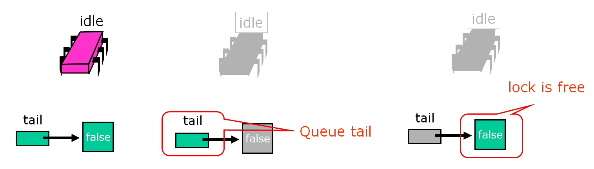
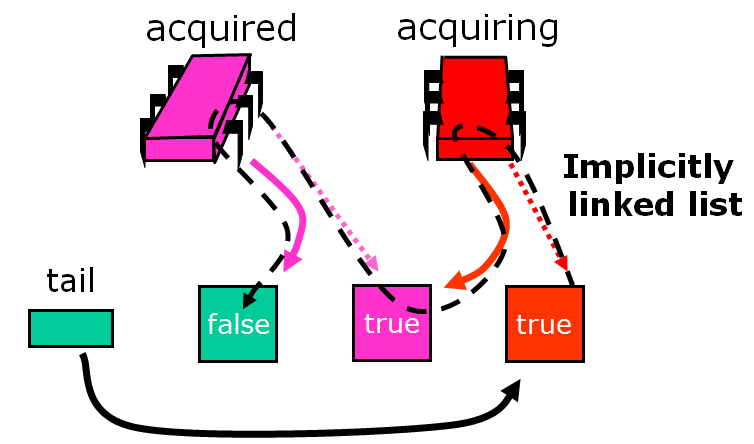
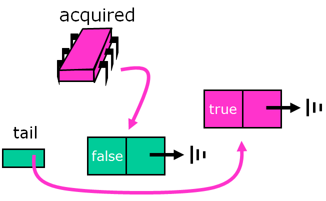
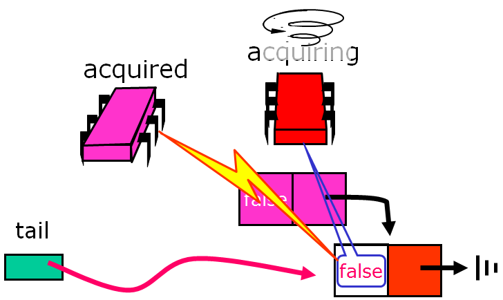
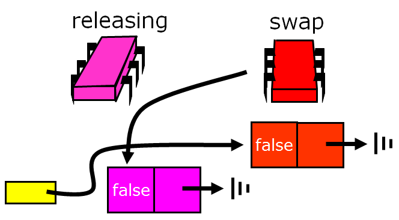
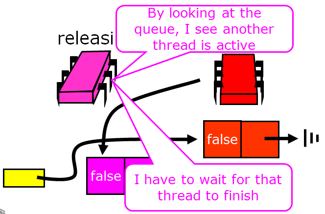
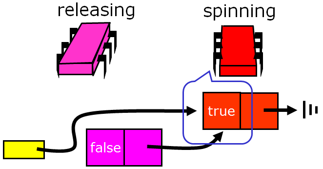
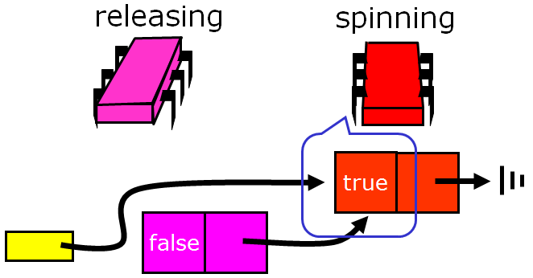

Part Two: A Couple of Other Ideas¶
Backoff Locks¶
To motivate an improvement on the TTAS lock algorithm, we review how it works: test the lock until it appears to be free, then pouncing with TAS. It seems logical to conclude that if another thread manages to acquire the lock between those two steps that it is under high contention and therefore unwise to continue trying to acquire immediately. Instead, it makes more sense to back off for some period of time.

For how long should the thread back off before retrying? A good rule of thumb is that the larger the number of unsuccessful tries, the higher the likely contention, and the longer the thread should back off. Here is a simple approach. Whenever the thread sees the lock has become free but fails to acquire it, it backs off before retrying. To ensure that concurrent conflicting threads do not fall into “lockstep”, all trying to acquire the lock at the same time, the thread backs off for a random duration. Each time the thread tries and fails to get the lock, it doubles the expected time it backs off, up to a fixed maximum.

Here is an implementation of such a lock. The constant MIN_DELAY indicates the initial, shortest limit (it makes no sense for the thread to back off for too short a duration).
1 2 3 4 5 6 7 8 9 10 11 12 13 | public class Backoff implements lock {
public void lock() {
int delay = MIN_DELAY;
while (true) {
while (state.get()) {}
if (!lock.getAndSet(true))
return;
sleep(random() % delay);
if (delay < MAX_DELAY)
delay = 2 * delay;
}
}
}
|
As in the TTAS algorithm, the thread spins testing the lock until the lock appears to be free. Then the thread tries to acquire the lock. If it fails, then it computes a random delay between zero and the current limit and then sleeps for that delay before retrying.
It doubles the limit for the next back-off, up to MAX_DELAY. It is important to note that the thread backs off only when it fails to acquire a lock that it had immediately before observed to be free. Observing that the lock is held by another thread says nothing about the level of contention.
The graph below shows that the backoff lock outperforms the TTAS lock, though it is far from the ideal curve (which is flat). The slope of the backoff curve varies greatly from one machine to another, but is invariably better than that of a TTAS lock.

The backoff lock is easy to implement, and on many architectures performs significantly better than TTAS lock. Unfortunately, its performance is sensitive to the choice of minimum and maximum delay constants. To deploy this lock on a particular architecture, it is easy to experiment with different values, and choose the ones that work best. Experience shows, however, that these optimal values are sensitive to the number of processors and their speed, so it is not easy to tune the back-off lock class to be portable across a range of different machines.
Queue Locks¶
We now explore a different approach to implementing spin locks, one that is a little more complicated than backoff locks, but inherently more portable. One can overcome these drawbacks by having threads form a line, or queue. In a queue, each thread can learn if its turn has arrived by checking whether its predecessor has been served. Invalidation traffic is reduced by having each thread spin on a different location. A queue also allows for better utilization of the critical section since there is no need to guess when to attempt to access it: each thread is notified directly by its predecessor in the queue. Finally, a queue provides first-come-first-served fairness, the same high level of fairness achieved by the bakery algorithm. We now explore different ways to implement queue locks, a family of locking algorithms that exploit these insights.
Here is the Anderson queue lock, a simple array-based queue lock. The threads share an atomic integer tail field, initially zero. To acquire the lock, each thread atomically increments the tail field. Call the resulting value the thread’s slot. The slot is used as an index into a Boolean flag array. If flag[j] is true, then the thread with slotj has permission to acquire the lock. Initially, flag[0] is true.

To acquire the lock, each thread atomically increments the tail field. We’ll call the resulting value the thread’s slot.


The slot is used as an index into a Boolean flag array. If flag[j] is true, then the thread with slot j has permission to acquire the lock. Initially, flag[0] is true. To acquire the lock, a thread spins until the flag at its slot becomes true.

Here another thread wants to acquire the lock.

It applies get-and-increment to the next pointer...

...and advances the next pointer to acquire its own slot.

Then it spins until the flag variable at that slot becomes true.

The first thread releases the lock by setting the next slot to true.

The second thread notices the change, and enters its critical section.

Here is an implementation of the Anderson queue lock.
1 2 3 4 5 6 7 8 | public class ALock implements Lock {
boolean[] flags= {true,false,...,false}; //one flag per thread
AtomicInteger next = new AtomicInteger(0); //next field tells us which flag to use
//each thread has a thread-local variable that keeps track of its slot
//(that is, each thread has a private instance of mySlot
//shared only by name and not reference)
ThreadLocal<Integer> mySlot;
}
|
We have one flag per thread, which means we have to know how many threads there are - there are N flags because you never expect to see more than N threads (each in line waiting for the lock). Unlike the bakery and Peterson filter algorithms, the flags are multi-reader and multi-writer, so a thread does not have an exclusive location in the flag array. Rather, a thread calls get-and-increment to get an assigned slot. It then spins on its assigned slot until the value is true.
Bus traffic, then, is greatly reduced as each thread spins on a locally cached copy of a single array location - contention on the flags is minimized and invalidation traffic is low as well. However, contention may still occur due to false sharing: cache memory is not stored as individual items but as multiword lines, and adjacent data items like array elements frequently share lines. When one flag is changed, it will invalidate its entire cache line, which may include nearby unchanged items. One way around this problem is to pad array elements so that each element is mapped to a distinct cache line (for example, with a cache of four-word lines, we can increase the lock array size fourfold and moving from location i to next location 4(i + 1) mod 32 rather than i + 1 mod 8.
Here is the code for the lock and unlock methods: if I’m a thread, first, I claim a slot by atomically incrementing the next field. Next, I wait until my predecessor has released the lock. I reset my slot to false so that it can be used the next time around. To release the lock, I set the slot after mine to true, being careful to wrap around.
1 2 3 4 5 6 7 8 9 | public lock() {
int mySlot = next.getAndIncrement(); //take next slot
while (!flags[mySlot % n]) {}; //spin until told where to go
flags[mySlot % n] = false; //prepare slot for reuse
}
public unlock() {
flags[(mySlot+1) % n] = true; //tell next thread to go
}
|
The Anderson queue lock improves on backoff locks because it reduces invalidations to a minimum and schedules access to the critical section tightly, minimizing the interval between when a lock is freed by one thread and when is acquired by another. There is also a theoretical benefit: unlike the TTAS and backoff lock, this algorithm guarantees that there is no lockout, and in fact, provides first-come-first-served fairness, which we actually lose in TTAS and TTAS with backoff.

The Anderson lock is the first truly scalable lock we’ve examined so far, and is simple and easy to implement. However, the Anderson lock has two disadvantages. First, it is not space-efficient; it requires knowing a bound N on the maximum number of concurrent threads, and it allocates an array of that size per lock (one bit per thread). Thus, L locks will require O(LN) space even if a thread accesses only one lock at a given time. Second, the lock is poorly suited for uncached architectures, since any thread may end up spinning on any array location, and in the absence of caches, spinning on a remote location may be very expensive.
The CLH Lock¶
The CLH queue lock (by Travis Craig, Anders Landin, and Erik Hagersten - most of these algorithms are named for their creators) is much more space-efficient, since it incurs a small constant-size overhead per thread. It also provides FIFO fairness.
This algorithm records each thread’s status in a QNode object, which has a Boolean locked field. If that field is true, then the corresponding thread either has acquired the lock or is waiting for the lock. If that field is false, then the thread has released the lock. The lock itself is represented as a virtual linked list of QNodes objects. We use the term “virtual” because the list is implicit: each thread points to its predecessor through a thread-local predvariable. The public tail variable points to the last node in the queue.
To acquire the lock, a thread sets the locked field of its QNode to true, meaning that the thread is not ready to release the lock.

The thread applies swap to the tail to make its own node the tail of the queue, simultaneously acquiring a reference to its predecessor’s QNode.

Because it sees that its predecessor’s QNode is false, this thread now has the lock.

Another thread that wants the lock does the same sequence of steps …


Note that the list is ordered implicitly - there are no real pointers between the nodes.

But each thread keeps a reference of the node it added to the list. So each thread has the node it was assigned from the swap and the reference to the node it added when the swap completed.

Again, the links are implicit, as shown below.
The waiting thread then spins on its predecessor’s QNode until the predecessor releases the lock.

The thread actually spins on a cached copy of purple’s node. This is very efficient in terms of interconnect traffic (unless you are on a NUMA architecture, where purple’s node may be on a different processor).

Some coherence protocols shared memory might not be updated at all, only the cached copy. This is very efficient.

When a thread acquires a lock it can reuse its predecessor’s QNode as its new node for future lock accesses. Note that it can do so since at this point the thread’s predecessor’s QNode will no longer be used by the predecessor, and the thread’s old QNode is pointed to either by the thread’s successor or by the tail.

The reuse of the QNode’s means that for L locks and N threads, if each thread accesses at most one lock at a time, we only need O(L+N) space as compared with O(LN) for the ALock. Of course, this only holds for accessing one lock at a time. If you access all L locks, then you need a QNode for each access.
Here is what the code looks like as a Java object: if the locked field is true, the lock has not been released yet (it may also not have been acquired yet either).
1 2 3 | class Qnode {
AtomicBoolean locked = new AtomicBoolean(true);
}
|
And here is the code for the lock:
1 2 3 4 5 6 7 8 9 10 11 12 13 14 15 16 | class CLHLock implements Lock {
AtomicReference<Qnode> tail; //tail of the queue
ThreadLocal<Qnode> myNode = new Qnode();
//recall that ThreadLocal means that each thread has a private
//instance of myNode, shared only by name and not reference)
public void lock() {
Qnode pred = tail.getAndSet(myNode); //swap in myNode
while (pred.locked) {} //spin until predecessor releases lock
}
public void unlock() {
myNode.locked.set(false); //notify successor
myNode = pred; //recycle predecessor's node
//(notice that we don't actually reuse myNode in lock())
}
}
|
Like the ALock, this algorithm has each thread spin on a distinct location, so when one thread releases its lock, it invalidates its successor’s cache only, and does not invalidate any other thread’s cache. It does so with a lower space overhead, and, importantly, without requiring prior knowledge of the number of threads accessing a lock. It also provides first-come-first-served fairness.
To understand the principal disadvantage of this lock algorithm, we need to know a little more about non-uniform memory (NUMA) architectures. NUMA architectures tend to be described as if they have flat shared memory, but the truth is that not all have caches, and some regions of memory are faster than others. The principal disadvantage of the CLHLock algorithm is that it performs poorly on cacheless NUMA architectures - each thread spins waiting for its predecessors’ nodes to become false. If this memory location is remote, then performance will suffer.

On cache-coherent architectures, however, this approach should work well.
MCS Lock¶
The MCS lock is another kind of queue lock that ensures that processes always spin on a fixed location in local memory, so this one works well for cacheless architectures. Like the CLH lock, it uses only a small fixed-size overhead per thread. It also provides FIFO fairness.
Here, too, the lock is represented as a linked list of QNodes, where each QNode represents either a lock holder or a thread waiting to acquire the lock. Unlike the CLH lock, the list is explicit, not virtual.

To acquire the lock, a thread places its own QNode at the tail of the list.

The node then swaps in a reference to its own QNode.

At this point the swap is completed, and the queue variable points to the tail of the queue.
To acquire the lock, a thread places its own QNode at the tail of the list. If there are no other QNodes on the list, it looks like this.

If a thread trying to acquire the lock has a predecessor, it modifies the predecessor’s node to refer back to its own QNode.

The predecessor’s node now refers to the red processor’s QNode.

The red processor now spins locally, waiting for its turn.

The purple node is the first node, and it finds the lock free, so its flag is already set to true (default on creation).
The red processor acquires the lock!

So now that we understand how it works, let’s take a look at the code. Here is the code for QNodes:
1 2 3 4 | class Qnode {
boolean locked = false;
Qnode next = null;
}
|
And here is the code that uses the QNode to implement an MCSLock:
1 2 3 4 5 6 7 8 9 10 11 12 13 | class MCSLock implements Lock {
AtomicReference tail;
public void lock() {
Qnode qnode = new Qnode(); //qnode should be a thread-local variable!
//we'll need it in the unlock method.
Qnode pred = tail.getAndSet(qnode); //add my node to the tail of queue
if (pred != null) {
qnode.locked = true;
pred.next = qnode;
while (qnode.locked) {} //wait until unlocked
}
}
}
|
The only way the CAS will fail is if someone has changed the tail. The fact that the tail has now changed suggests that someone else is trying to acquire the lock, and we need to wait for them to set the next pointer.
1 2 3 4 5 6 7 8 9 | public void unlock() {
if (qnode.next == null) { //no successor?
if (tail.CAS(qnode, null) //if really no successor, return
return;
while (qnode.next == null) {} //Otherwise wait for successor to catch up
}
qnode.next.locked = false; //pass lock to successor
}
}
|
We’ll unpack unlocking with some more images. We left off here:
The purple node looks at the queue.
Red prepares to spin...
 

...and then spins!

And red has acquired the lock!


{kind=link}
{kind=link}
{kind=link}
{kind=link}
{kind=link}
{kind=link}
{kind=link}